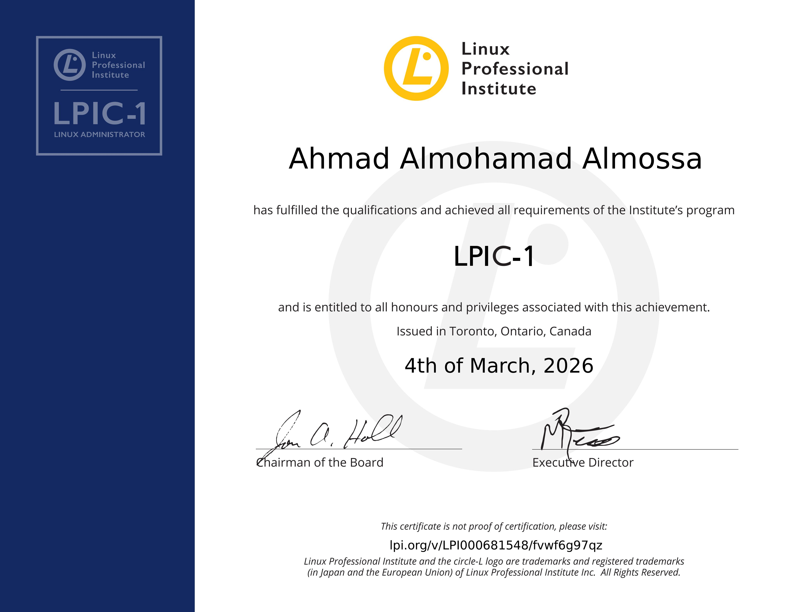

IT professional with several years of experience across AWS cloud infrastructure, network engineering, IT security, Linux administration, Infrastructure as Code and operational support.
I am an IT and Cloud professional focused on cloud infrastructure, networking, cybersecurity and system administration. My professional experience includes working with AWS environments, network and security concepts, Terraform-based Infrastructure as Code, CI/CD processes, monitoring and the integration of on-premises and cloud environments.
I enjoy analysing complex technical problems, troubleshooting incidents systematically and developing practical, secure and maintainable solutions. I continuously strengthen my expertise through hands-on laboratories, cybersecurity projects and professional certifications.
Worked with AWS network infrastructure and security concepts, Infrastructure as Code with Terraform, CI/CD processes, monitoring and the integration of on-premises and cloud environments. Supported complex technical tickets, customer requirements, troubleshooting and reliable IT operations.
Experience in operational monitoring and incident management, including analysis of technical and security-related events and structured troubleshooting.
Practical environment using Elastic Stack, Syslog and Python for centralized log collection, monitoring, analysis and security-event investigation.
Hands-on laboratory using Linux, Docker, Kali Linux, DVWA and OWASP Juice Shop for vulnerability analysis and web-security testing.
Professional and practical work around AWS infrastructure, network architecture, security controls and Infrastructure as Code using Terraform.
Practical Linux administration covering system configuration, hardening, networking, monitoring and troubleshooting.

Linux system administration and command-line fundamentals.
Cybersecurity fundamentals, security controls and operational security.
Cybersecurity analysis, threat detection and response.
For professional opportunities in Cloud Engineering, AWS, Network Engineering, Cybersecurity, Security Operations and Linux Administration.
Germany · Available for professional opportunities